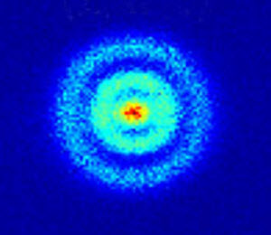
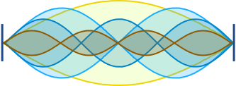
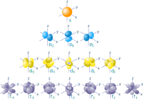
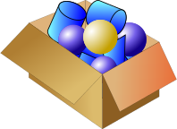
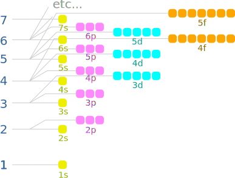

Atom Orbitals
An atom is a system of one or more electrons bound to a nucleus. Here is a quantum microscope image of a hydrogen atom:

https://dx.doi.org/10.1103/PhysRevLett.110.213001
Hydrogen has just one electron, which exists as a fuzzy probability cloud.
That probability cloud is called an orbital (not orbit):
Orbital: a region where we expect an electron to be 90% of the time.
The simplest orbital is the "s" orbital (such as the single electron in Hydrogen):

s orbital
We can have more than one orbital, and each one has a different energy state.
Imagine the different vibrations we can get on a simple string:

some different vibration modes of a string
Now see the interesting vibration modes on a 2D surface like a drum:
(Note for the curious: the above animation uses the "Bessel Function" to calculate the different ways a surface can vibrate when it is fixed at its edges.)
Now imagine the vibration modes around a nucleus!
Well, here they are, with labels:

orbitals s, p, d and f
- Electrons prefer to be at the lowest energy state possible.
- The s orbital has the lowest energy state then p, d and f
- An orbital can have up to two electrons (each with opposite "spin")
But there is one more twist! An atom hosts electrons in shells:
- the first shell only has an s orbital
- the second shell can have an s orbital and p orbitals
- the third shell can have s, p and d orbitals
- the fourth shell can have s, p, d and f orbitals
- later shells can also have s, p, d and f orbitals (no more are needed for the elements we know!)

So where does each electron go?
Well, it is like packing things into a box, the items find their lowest energy locations.
And so for electrons we need to think about the energy needed for the shell plus the energy needed for the orbital.
And we get this (notice how energy levels overlap):

energy of shell plus orbital
The order goes 1s, 2s, 2p, 3s, 3p, 4s, 3d, 4p, 5s, 4d, etc. But there are exceptions! Those pesky electrons don't like to be told what to do except by nature.
Look at Periodic Table and Electrons to see more of the story!